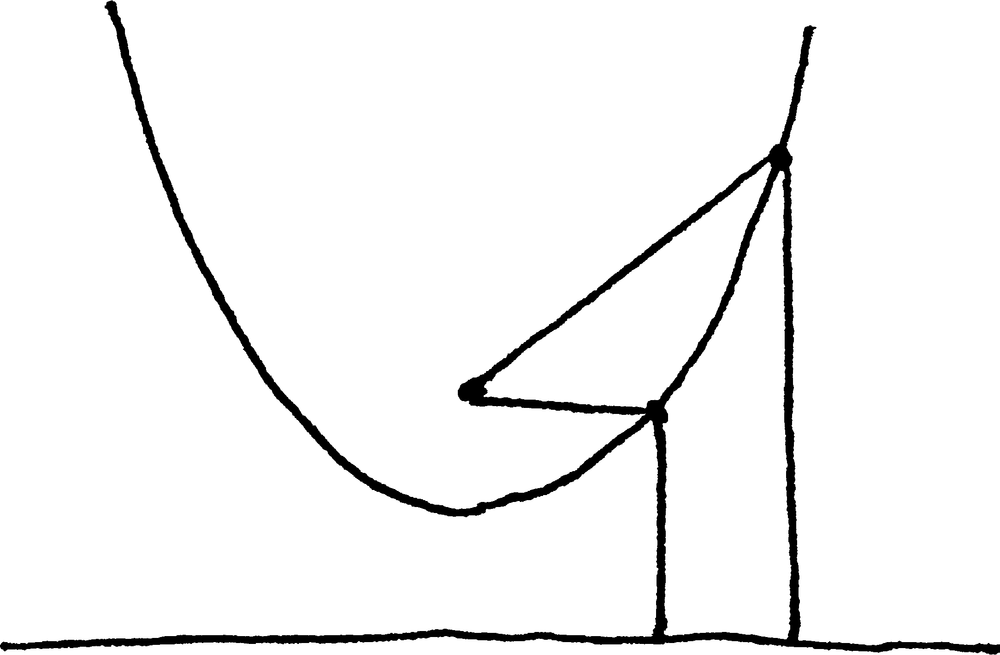
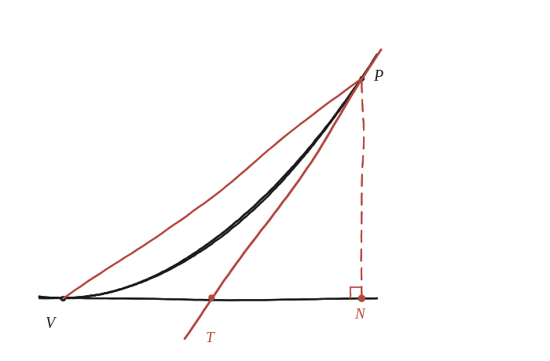

Per què l'àrea d'un sector parabòlic és igual a la meitat de l'àrea del rectangle parabòlic?

Què hem de produir
Una relació d'àrees 1:2 entre dues figures: el triangle TNP tallat per la tangent en un punt P de la paràbola (el "sector"), i el triangle VNP —la meitat del rectangle des del vèrtex V fins a aquell mateix punt P.
On talla la tangent l'eix?
Sigui P un punt de la paràbola i N el seu peu (la projecció de P sobre l'eix). La tangent en P talla aquest mateix eix en un punt T. Quina relació hi ha entre la distància de T al vèrtex i la de N al vèrtex?
La construcció

Tancar-ho
Amb y=x² i P=(p,p²), la tangent en P té pendent 2p —es pot trobar sense derivades, exigint que la recta toqui la paràbola en un sol punt (discriminant zero)— i talla y=0 a x=p/2: exactament el punt mitjà entre el vèrtex (x=0) i N (x=p). El triangle VNP té sempre àrea igual a la meitat del rectangle vèrtex-a-P; i com que T és el punt mitjà de VN, el triangle TNP —el sector— té la mateixa alçada que VNP però la meitat de la base, així que la seva àrea és la meitat de la de VNP.
La tangent a la paràbola en P talla l'eix exactament al punt mitjà entre el vèrtex i el peu de P. Per això el sector TNP té la meitat de la base del triangle VNP —que ja és la meitat del rectangle— i acaba fent exactament un quart del rectangle, és a dir, la meitat del triangle diagonal VNP.
Comprovació
p=3: rectangle V-N-P = 3·9=27, meitat (triangle VNP) = 13,5. Triangle TNP amb T=(1,5, 0): base 1,5, alçada 9, àrea 0,5·1,5·9=6,75 = exactament la meitat de 13,5.
Que la tangent talli l'eix exactament al punt mitjà —ni abans ni després— és el mateix fet que fa possible calcular, sense cap límit ni integral, quina fracció exacta del rectangle omple la paràbola sencera.